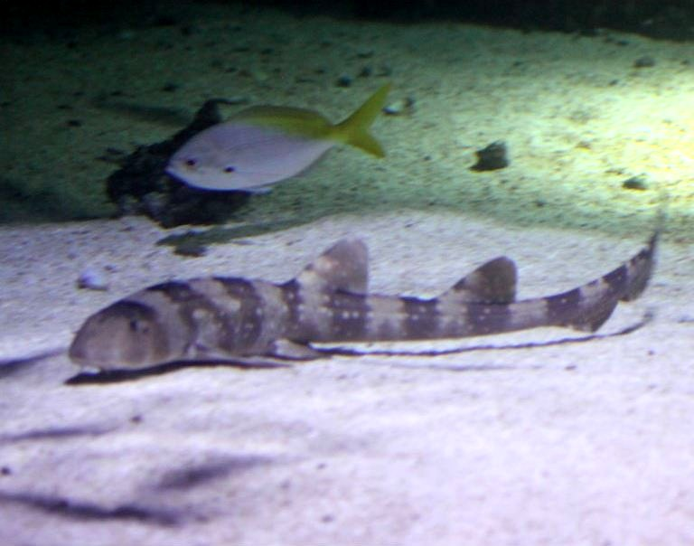
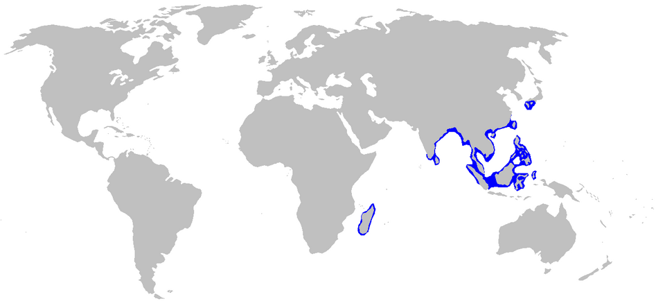
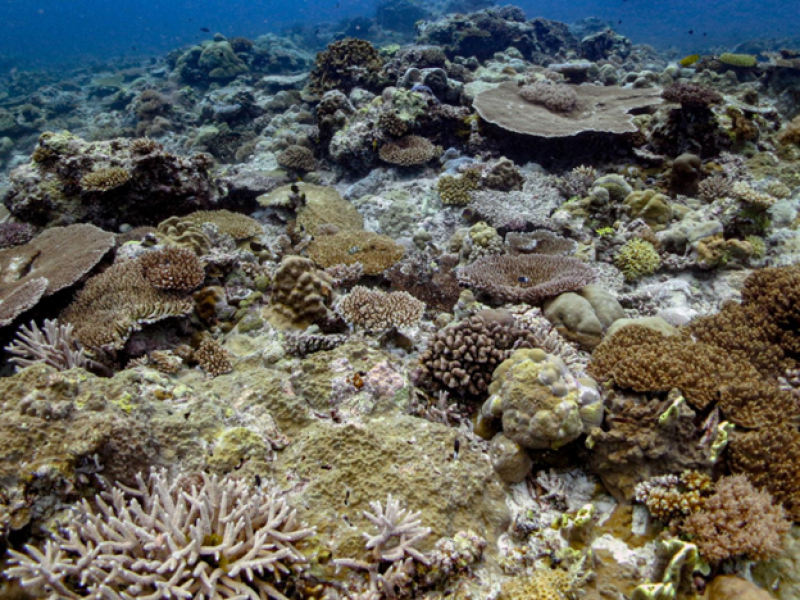

The Basics
Common Name
White-Spotted Bamboo Shark
Conservation Status:
Near Threatened[1]
Physical Profile
Their size ranges from 82 centimeters to 97 centimeters in length, and it can be diferenciated from other species of carpet sharks by its distinctive white spots[2].
Habitat and Geography
They soley live in coral reefs in the Indo-West Pacific region[3].


Ecology and Behavior
- They are nocturnal and spend most of their time resting on the sea floor. [2]
- They are oviparous (egg-laying)[2] and can go through parthenogenesis.[5]
- Typically, hunted by common larger predators natural to coral reefs such as barracudas and larger sharks. They are currently however, mostly threatned by humans.[6]
- likewise to the gray's monitor, their methods of communication are not well researched and curently unknown.
- They are carnivorous and feed on small fish and invertebrates, flattened front surface of teeth evolved to crush crabs.[4]
Full Scientific Classification
| Taxonomic Rank | Scientific Name |
|---|---|
| Kingdom | Animalia |
| Phylum | Chordata |
| Class | Chondrichthyes |
| Order | Orectolobiformes |
| Family | Hemiscylliidae |
| Genus | Chiloscyllium |
| Species | C. plagiosum |